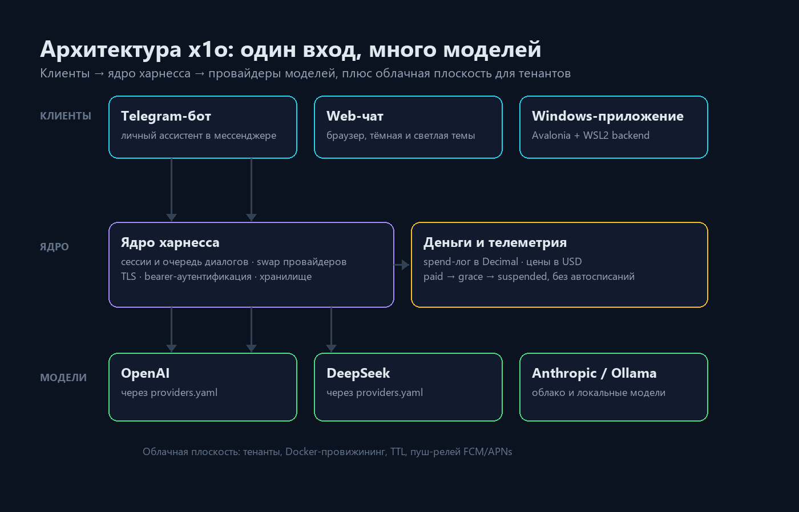

x1o: один харнесс для всех моделей
Самохостная платформа личных ИИ-ассистентов: единый API, очередь диалогов, биллинг и облачная плоскость для тенантов.
Когда ассистентов становится больше одного, начинается зоопарк: у OpenAI свой SDK, у DeepSeek свой API, локальные модели вообще живут в Ollama. Каждый клиент — Telegram, браузер, приложение — требует своей интеграции, а счёт за токены приходит из трёх мест и ни с чем не сходится.
x1o — самохостная платформа, которая ставит между вами и моделями один слой: вы открываете Telegram, браузер или Windows-приложение и общаетесь с ассистентом, а харнесс решает, какая модель ответит, где лежит история, сколько это стоило и как не потерять ответ.

Что делает харнесс
- Один вход, много моделей — OpenAI, DeepSeek и Anthropic преднастроены, Ollama — для локальных. Новый провайдер добавляется конфигом, без правки кода.
- Очередь диалогов — запросы не теряются при переключении провайдера и не дублируются при обрыве.
- Хранилище — история сессий принадлежит вам, а не вендору модели.
- Пуши — ответ приходит в Telegram или на телефон, даже если вкладка закрыта.
- Деньги под контролем — журнал расходов считает токены и оценку в USD по явно заданным ценам.
- Облачная плоскость — тенанты, провижининг и TTL для тех, кто ставит платформу не только себе.
Четыре решения, которые определяют продукт
1. Провайдеры — это конфигурация, а не код. Файл providers.yaml описывает провайдеров, модели и цены. Добавить новую модель — значит дописать строчку, а не пересобирать сервис.
2. Деньги считаются честно. Журнал расходов ведёт учёт в Decimal, без плавающей точки. Если у модели не задана цена, стоимость остаётся null — «ноль» и «неизвестно» это разные вещи. Есть агрегации по дню и месяцу.
3. Биллинг без сюрпризов. Статусы paid → grace → suspended с видимыми датами, и никаких автосписаний с карты — это осознанное решение, а не недоделка.
4. Безопасность по построению. Секреты берутся только из переменных окружения и в репозиторий не попадают. Нет кредов — функция выключена (fail-closed). Вебхуки платежей подписаны и проверяются. Телеметрии и сторонних трекеров нет вовсе.
Из чего состоит платформа
Проект разбит на модули, у каждого свой критерий готовности:
| Блок | Что внутри |
|---|---|
| Ядро | сессии, очередь, переключение провайдеров, TLS, аутентификация |
| Локальные модели | обнаружение в сети и оценка качества |
| Клиенты | web-чат, desktop-оболочка Tauri, Windows UI на Avalonia с WSL2-backend |
| Уведомления | push-релей FCM (HTTP v1) и APNs |
| Облако | тенанты, Docker-провижининг, TTL |
| Платежи | рабочие интеграции и набор fail-closed скелетов |
| Эксплуатация | алерты, резервное копирование, восстановление, статус-страница |
| Деплой | docker-compose, first-run визард, ранбук инцидентов, харденинг |
| Онбординг | лендинг, три шага до первого диалога, личный кабинет |
Модульность здесь не ради красивой схемы: каждый блок можно выключить конфигом, и платформа останется работоспособной.
Как это проверяется
Около 1400 тестов на pytest, отдельный security-сьют, HTTP-acceptance-прогон и продуктовые «ворота», которые не пропускают сборку без пройденных проверок. Для self-hosted продукта, который хранит чужие диалоги и считает чужие деньги, это не роскошь, а способ не чинить одно и не ломать другое.
Статус
x1o находится в закрытой разработке: репозиторий приватный, публично доступен сайт x1o.org. Эта заметка — обзор продукта, а не инструкция по установке: команды и внутренние детали появятся, когда проект выйдет из закрытой фазы.
Кому подойдёт
Тем, кто хочет держать ассистента на своём железе и не размазывать историю по чужим сервисам. Тем, кому нужен один API для нескольких моделей и понятный учёт расходов. И тем, кто готов один раз развернуть инфраструктуру, чтобы потом не собирать её из пяти сервисов.